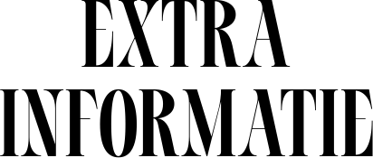

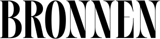
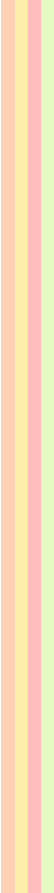
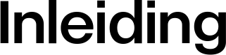
YouTube is mijn favoriete mediaplatform door de breedte
van het aanbod. Het is een soort persoonlijke encyclopedie.
Ik kijk er veel verschillende soorten content op: documentaires,
tutorials, geschiedenisfilmpjes, etc. Wat mij dwarszit aan YouTube
is het immense aanbod aan breindode, simpele content,
vergelijkbaar met die op andere socialemediaplatformen zoals Instagram
en TikTok. Hierdoor wordt YouTube door veel mensen
nog steeds gezien als een ‘tijdverspiller’ en niet
als een serieuze mediabron. In dit manifest zal
ik de nodige veranderingen op YouTube en om
het platform heen uitleggen, en beschrijven hoe deze
zullen leiden tot een inhoudelijkere en betrouwbaardere site.
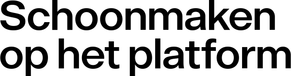
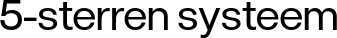
Mijn eerste verandering is het integreren van een beoordelingssysteem
met vijf sterren. Gebruikers van het platform kunnen na
het kijken van een video een beoordeling in de vorm
van sterren geven.
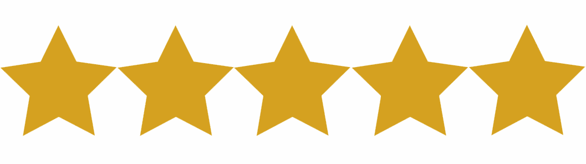
*dit is een voorbeeld van hoe het sterren systeem eruit zo komen te zien
Dit, in combinatie met het aantal mensen
dat de video heeft beoordeeld, zal andere gebruikers helpen
te zien of een video over het algemeen kwalitatief is.
Ook zal de beoordeling van een gebruiker worden weergegeven
bij diens opmerking onder de video.
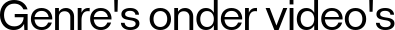
Mijn tweede verandering komt in de vorm van genres
die direct onder video's worden weergegeven. Elke contentmaker zal
zijn video moeten categoriseren met twee tot vier genres
waaronder de video valt. De administratie van YouTube zal
controleren of deze categorieën aansluiten bij de video.
Door deze aanpassing zal het makkelijker worden om content te
vinden die past bij de interesses en doelen van
de gebruiker. YouTube heeft al een categoriesysteem, maar dit
wordt niet gecontroleerd en de categorieën worden niet duidelijk
onder video's weergegeven.
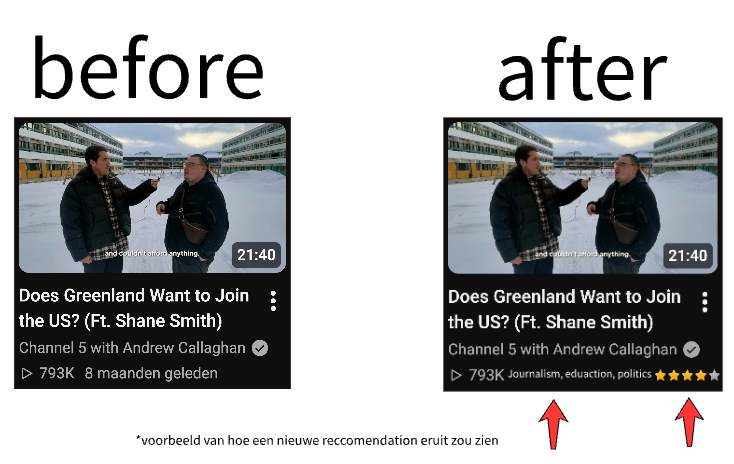
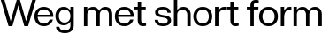
Als derde zou ik YouTube Shorts (de shortformoptie op
YouTube) volledig weghalen. Veel mensen klikken eerder op
Shorts, omdat deze gemakkelijker te bekijken zijn en minder
aandacht van je vragen. Het gevolg hiervan is dat
dit deel van YouTube wordt gedomineerd door zogenaamde ‘slop-content’,
die weinig tot geen inhoud en geen diepgang heeft
en alleen bedoeld is om geld te verdienen en
de tijd van gebruikers te verspillen. Het weghalen hiervan
zal ons dichter bij het doel brengen van een
inhoudelijkere versie van YouTube.
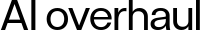
Ook moet YouTube strenger ingrijpen op het gebied van
AI. Veel educatieve filmpjes op YouTube zijn volledig gegenereerd
door AI. alle tekst, stemmen en beeldmateriaal. Ook al
heeft AI meer bronnen om van te leren, kan
het nog steeds fouten maken. De kanalen die deze
video's produceren maken tientallen van dit soort video's per
dag en vervagen het werk van menselijke content creators
die talloze uren in hun video's stoppen. YouTube moet
hierom een direct verbod op AI content plaatsen en
vooral strenger ingrijpen op kanalen die dit posten, zoals
het kanaal verwijderen.
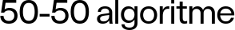
Als laatste wil ik het algoritme veranderen dat video's
op YouTube aanbeveelt. YouTube bevordert vaak content-makers die al
veel views en volgers hebben. Dit is op zichzelf
niet erg, maar mijn verandering hieraan zou zijn dat
bij 50% van de aanbevolen video's niet wordt gelet
op het aantal views en dat de andere 50%
van de aanbevolen video's minder dan 50.000 views heeft.
Hierdoor worden kleinere contentmakers geholpen en kunnen gebruikers
nieuwe makers makkelijker ontdekken en ondersteunen.
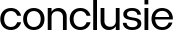
Met deze veranderingen geloof ik dat YouTube een platform 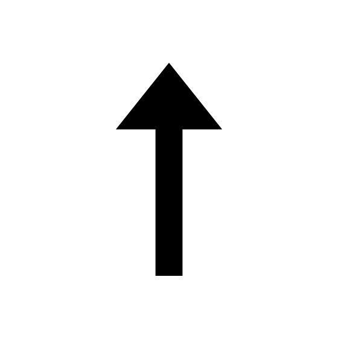
kan worden voor inhoudelijke content die wordt gezien als
serieuze bron. Er zal altijd content op het platform
blijven dat niet bedoeld is als culturele inlichting, maar
de magie aan YouTube is dat iedereen iets mag maken.
Ik hoop dat door deze maatregelen te nemen het een
effect heeft op wat gebruikers kiezen te kijken en
dat zij YouTube gebruiken als hulpbron en inspiratie in plaats
van een tijdverspiller tussen lege momenten. Ik denk dat
mensen veel kunnen leren over de wereld om hun
heen als er een platform is zoals een schoner YouTube.